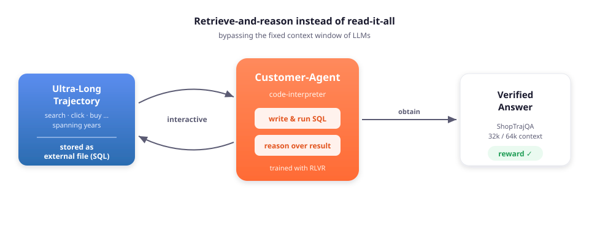

Preprint · 2026
Overcoming Context Limitations in Ultra-Long Shopping Trajectories
via Tool-Augmented Agents and RLVR
★Work done during an internship at Amazon.

Figure 1. Instead of forcing an ultra-long shopping trajectory into a fixed context window, Customer-Agent stores it as an external local file and trains the model — via Reinforcement Learning with Verifiable Rewards (RLVR) — to autonomously retrieve and parse it through code-interpreter interactions (e.g., SQL queries).
Understanding customer shopping trajectories is essential for enabling personalized shopping experiences. However, shopping records (i.e., a customer's searches, clicks, purchases, etc.) often span long time horizons over multiple years, resulting in extremely long trajectories that pose significant challenges for existing large language models (LLMs). Despite the importance of this problem, existing benchmarks are limited to short customer trajectories, while real-world trajectories from large e-commerce platforms are rarely accessible due to data privacy constraints. To address this gap, we introduce ShopTrajQA, a long-context evaluation benchmark constructed from real-world product information and simulated shopping trajectories. The dataset includes variants of up to 32k and 64k tokens, enabling systematic evaluation of model robustness under varying context lengths. Through comprehensive benchmarking of frontier LLMs, we identify critical performance gaps in reasoning over long shopping-trajectory data. To address these challenges, we propose a Customer Agent Framework for ultra-long context management. Leveraging a Reinforcement Learning with Verifiable Rewards (RLVR) agentic training paradigm, our approach stores trajectories as external local files and trains the agent to autonomously retrieve and parse them through code-interpreter interactions (e.g., SQL queries), effectively bypassing the fixed in-context window constraints of LLMs. Experimental results demonstrate that our framework achieves strong performance on ShopTrajQA and generalizes to other complex reasoning tasks.
All training and evaluation data are released on Hugging Face: hongyeeliu/ShopTrajQA.
@article{liu2026customeragent,
title = {Customer-Agent: Overcoming Context Limitations in Ultra-Long
Shopping Trajectories via Tool-Augmented Agents and RLVR},
author = {Liu, Hongye and Lin, Rongmei and Kashyap, Anurag and Cui, Hejie
and Henao, Ricardo and Fetahu, Besnik and Yin, Bing},
journal = {arXiv preprint arXiv:2606.07995},
year = {2026}
}